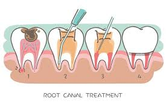
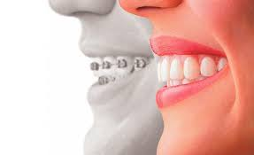
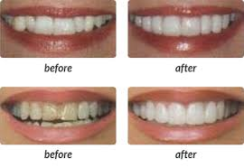
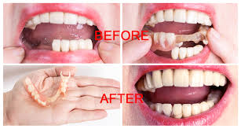
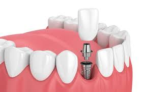
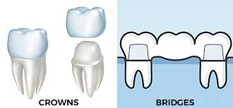
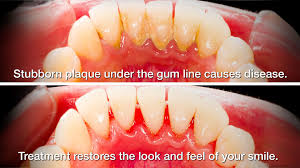
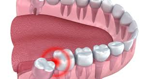
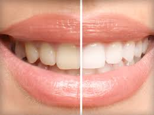

About Us
Elite Dental Clinic is in the heart of the town and a one stop destination for all your dental problems.
- The clinic is equipped with latest dental equipment and devices (including digital dental x-ray) to ensure optimum quality and safety.
- We urge to improve your tooth longevity and appearance and perform all our dental practices in a modern state-of-the-art environment that is both effective and long lasting.
About the Doctor
Dr. Kripa Agarwal, the chief dentist at Elite Dental Clinic, has completed her Bachelor of Dental Surgery (BDS) from College of Dental Studies, Davangere (Karnataka), one of the most renowned and prestigious institutes for Dental Sciences in India, passed out in 2014. She has been practising for over 6years now, and has been associated with leading multi-speciality dental establishments like FMS Dental Hospital, Hyderabad, and Parasu Dental Center, Chennai, and been a part of various dental camps and seminars during this tenure. She continues to advance her professional knowledge & training by attending several advanced dental training programmes and workshops.
Dr. Kripa holds her speciality primarily in Root Canal Treatment (RCT, also known as endodontic therapy), and Cosmetic Dentistry, and has been extensively trained in these fields in Chennai under the guidance of Dr. Narasimhan Bharadwaj who is the founder and director of Access Dental & Root Canal Center (Estd. 2001). Additionally, she also holds certifications in Aesthetic Dentistry and Laser Dentistry.
She aims to keep serving the society by increasing dental awareness in the common public, which is still at a very nascent stage, by engaging with the patient to help them understand the importance of oral hygiene and the various treatment options available for their dental problems. In her constant endeavour to provide the best advice and treatment, she continues to enhance her knowledge by participating in various seminars and workshops across the country.
Treatments / Services Offered
Elite Dental Clinic offers the below services and treatments
Root Canal Treatment / Endodontic Therapy
Root Canal Treatment (RCT) is carried out when the tooth gets infected due to decay or cavity and has involved the nerve of the tooth (also known as pulp) causing uneasiness, swelling and pain in the area.
Braces / Orthodontic Treatment
To correct crooked teeth, traditional metal or ceramic braces are used. More advanced and latest methods include lingual orthodontics and Invisalign treatment.
Cosmetic Dentistry
Cosmetic Dentistry can rectify chipped or crooked teeth, fill gaps between teeth, whiten stained or discoloured teeth, replace missing or broken teeth and reduce a gummy smile.
Teeth Replacement / Dentures
Due to the natural aging process and/or debilitating illness, senior citizens are more likely to suffer from a host of oral health issues including missing teeth. A denture is a removable replacement for missing teeth and surrounding tissues.
Dental implants
Dental implants are the best options for a permanent replacement for missing teeth, where the root/roots of a tooth get replaced. These implants are made of titanium alloys or zirconia, and a crown is placed once the implant is fused in the jawbone.
Dental Crowns and Bridges
Crowns and bridges are fixed prosthetic devices. Unlike removable devices such as dentures which one can take out and clean daily, crowns and bridges are cemented onto existing teeth or implants
Scaling and Gum Treatment
Gum disease could lead to bone loss and tooth decay. Scaling and root planning are deep cleaning techniques below the gumline for treating gum disease.
Extractions and Wisdom Tooth Surgeries
We take every effort to preserve your natural teeth. However, there are instances when the tooth is unrestorable and are associated with tooth ache/bone loss, and thus extraction becomes the only option.
Restrorative Dentistry
The latest advancement in the field of restorative dentistry includes tooth coloured fillings which are of two types- composite and glass ionomer cement.
Why choose us?
Elite Dental Clinic
Elite Dental Clinic is in the heart of the town and a one stop destination for all your dental problems. The clinic is equipped with latest dental equipment and devices (including digital dental x-ray) to ensure optimum quality and safety. The premise is well lit & ventilated to provide a comfortable and conducive environment for dental treatments.
Your Dental Health is our priority
At Elite Dental, we prioritize the dental health of the patients over everything else and we leave no stone unturned to achieve the same. We ensure that every patient leaves our dental clinic with a smile on their face and is fully satisfied with the treatment. In our constant endeavour to offer the best dental treatments, we incorporate the latest dental technologies and techniques.
Modern Treatment
As dentists, we take the liberty to advise on the most appropriate dental treatments for your individual needs. We urge to improve your tooth longevity and appearance and perform all our dental practices in a modern state-of-the-art environment that is both effective and long lasting.
Clients
Hours Of Support
Months of Operation
Call To Make an Appointment
Contact us to make a consultation or treatment appointment!
Testimonials

Dr. Arohan Sapkota
MD at Homerton University Hospital, London, UK
Excellent Dental care. Dr. Kripa is a good doctor and a good human being. Highly recommend this clinic. Thank you for the care you have provided.

Ankit Verma
Entrepreneur, Gantok
Had my first rct done! And it was simply easy going perfect! All the equipment are latest and update! And the clinic is right in the heart of town! In new market! Highly recommended!

Shikha Bhargava
Finance Professional, Pune
A great clinic and an experienced doctor make it a perfect visit. The treatment was very smooth and quick. The service was really good. I would strongly recommend this dental clinic to everyone facing any kind of dental problem.

Dr. Arti Sharma
DNB (OBG), Asian Institute of Medical Sciences, New Delhi
Had a very good experience. Doctor is very friendly, explained me the problem and possible treatments in detail. She made the entire treatment very comfortable for me. Cleared all my doubts. Highly recommend her. Would definitely visit her again.

Gupta Prakash Chandra
February 15, 2020
Overall, it was a better experience to what i have thought I had a fear in mind to bear the pain but Dr. kripa made it easy I extracted my tooth with one-time least pain. she made my oral health better than before. Thanks to Elite Dental Clinic.

Uma Agarwal Vigneshwaran
Technology Manager, Wells Fargo
A much needed dental clinic at heart of the town, equipped with latest technologies and facilities aced by a top-notch Doctor Kripa!!

Saransh Sharma
HR Professional, New Delhi
Visited the clinic for a dental problem and it was easy to locate the place... The clinic is neat and well lit, and the doctor explained the problem and the treatment well. Continuing with the treatment as prescribed.

Kundan Kumar
Finance Professional, New York
Very good clinic. Friendly staff. Went there for routine cleaning. Overall, it was a very good experience.

Sumit agarwal
AVP, Credit Suisse Bank, Bangalore
One of a kind dental clinic in Gangtok , Dr Kripa has had quality experience and helps build a lot of confidence with the patients , to add it up , Elite has good network with senior doctors across Gangtok and SMUHMTS , and so you can expect best treatment there . Thanks Dr Kripa and Elite Dental clinic for quality and timely treatment for the many patients .
Frequently Asked Questions
Some of the most asked questions are answered here
-
Why does tooth decay?
Decay happens when sugars in food and drinks react with the bacteria in plaque, forming acids. Every time you eat or drink anything containing sugars, these acids attack the teeth and start to soften and dissolve the enamel. Snacking between meals on sugary or acidic foods and drinks can increase the risk of decay, as the teeth come under constant attack and do not have time to recover. It is therefore important not to keep snacking on sugary foods or sipping sugary drinks throughout the day.
-
What happens if I have a cavity?
Once the cavity has reached the dentine your tooth may become sensitive, particularly with sweet foods and drinks, and acidic or hot foods. If ignored at this stage, the decay continues to grow deep and reaches the pulp (nerve) of the tooth, following which the patient gives the symptoms of severe pain.
-
What happens if I don’t get the decay treated in time?
Toothache is a sign that you should visit a dentist straight away, as it is a warning that something is wrong. If you don’t do anything, this will usually make matters worse and you may lose a tooth that could otherwise have been saved.
-
What treatment will I require if I have a cavity?
If the decay is not too serious, the dentist will remove all the decay and restore the tooth with a filling. Sometimes the nerve in the middle of the tooth can be damaged. If so, the dentist will need to do a root canal treatment by removing the nerve and then restoring the tooth with a filling or a crown. If the tooth is so badly decayed that it cannot be restored, the dentist may have to extract it.
-
What can I do to prevent decay?
The best way to prevent dental decay is by brushing your teeth thoroughly twice a day with fluoride toothpaste, making sure that you brush the inner, outer and biting surfaces of your teeth. Using ‘interdental’ brushes, or dental floss also helps remove plaque and food from between your teeth and where they meet the gums. These are the areas where an ordinary toothbrush can’t reach.
-
When do I need a Root Canal?
You need a root canal in case you have one of the following symptoms:
- Sensitivity to hot or cold that lingers.
- Discomfort when chewing or biting.
- Dull ache or severe pain.
- Discomfort that wakes you up at night.
- Your dentist has diagnosed the need for endodontic treatment either by clinical exam or x-ray.
-
What are the benefits of Root Canal Therapy Versus Extraction?
The single most important benefit of root canal therapy is that you save your tooth. Extraction may lead to other dental problems. For instance, drifting of teeth, bite problems, TMJ discomfort, and the need to treat adjacent teeth that do not otherwise need dental treatment in order to restore the missing tooth. No matter how effective modern tooth replacements are – and they can be very effective – nothing is as good as your natural tooth.
-
Will it hurt during the root canal procedure?
With modern techniques and local anaesthesia, its likely not to hurt during the procedure. However certain patients feel slightly sensitive.
-
Why are crowns placed?
Crowns may be placed for several reasons. Usually the tooth has been broken or severely damaged by decay. As a result, a filling can’t replace enough of the tooth or make the tooth strong enough. A crown may hold together parts of a cracked tooth. It also can be used to hold a bridge in place. Crowns can be used to improve appearance as well. They may be placed to cover misshapen or badly discolored teeth. They are also used to cover a dental implant, used to cover the tooth after RCT. It can also be used to protect a weak tooth from fracturing.
-
What is the material used for crowns and bridges?
There are primary materials used in the present day are - all ceramic (porcelain), porcelain fused to metal.
-
What are the alternatives to dental bridge?
Dental implants are used for replacing missing teeth today. While dental implants are more costly their benefits are much greater.
-
What is dental implant?
A dental implant is used to replace missing teeth. It supports one or more false teeth. It is a titanium screw that can replace the root of a tooth when it fails. Just like a tooth root, it is placed into the jawbone.
-
Are implants safe and how long will they last?
Implants are a safe, well-established treatment. How well do you take care of your implants – and whether you go for your regular appointments or not – will have the biggest impact on how long they will last. If you don’t look after your implants, they will develop a coating similar to that found on neglected natural teeth. Left untreated, this can lead to gum infection, bleeding, soreness and general discomfort. You could get all these problems with natural teeth. If your implants are well looked after, and if the bone they are fitted to is strong and healthy, you can expect them to last for many years. However, just as with other surgical implants (such as a hip replacement) there is no lifetime guarantee.
-
What is teeth cleaning / scaling?
Teeth’s cleaning is a part of oral hygiene and involves the removal of dental plaque from teeth with the intention of preventing cavities and gum diseases.
-
Does scaling loosen the teeth?
No, scaling doesn’t loosen the teeth. Calculus (which is a hard substance formed over a period of time due to the plaque deposition) surrounds your teeth and gums very tightly. When this is removed during the scaling procedure, the patients feel as though the teeth have become loose. Scaling is a safe and routine procedure and does not damage the tooth surface in any way.
-
Why is flossing important?
Floss helps to remove leftover food particles between the teeth and inside the gum pockets, which reduces the volume of plaque inside the mouth. And flossing is especially important in the prevention of gum disease, which is the main cause of tooth loss and the incidence of tooth decay.
-
My kid’s teeth are coming in crooked. Do they definitely need braces?
Possibly but not necessarily. When your child’s milk teeth are falling and permanent teeth are erupting, the stage is called the ugly duckling stage. However, if significant crowding is seen then the child might need braces. An orthodontist would be the best judge.
-
Other than looking good do braces have other benefits?
Braces help not only for cosmetic reasons but also for other purposes. Straightening teeth helps make cleaning easier, preventing decay and other gum problems. They help in correcting the bite that can make chewing more efficient thus increasing the overall health of your child. It also helps in correcting speech problems. It reduces jaw pains due to correction of wrong bites.
-
Other than looking good do braces have other benefits?
Braces help not only for cosmetic reasons but also for other purposes. Straightening teeth helps make cleaning easier, preventing decay and other gum problems. They help in correcting the bite that can make chewing more efficient thus increasing the overall health of your child. It also helps in correcting speech problems. It reduces jaw pains due to correction of wrong bites.
-
Will my child be in constant pain and discomfort?
Initially your child might have some amount of pain. It may hurt for a couple of days after every monthly adjustment. However, with the advance of medicine, mild painkillers can be prescribed.
-
Tell me about Root Canal Treatment or Endodontic Therapy.
Root Canal Treatment (RCT) is carried out when the tooth gets infected due to decay or cavity and has involved the nerve of the tooth (also known as pulp) causing uneasiness, swelling and pain in the area. An RCT procedure involves elimination of the nerve, cleaning the root canal and sealing off the tooth to protect it from further decay & damage, thus saving the natural tooth. A crown is then placed over the tooth to make it stronger. Dental crowns can be made of Porcelain Fused Metal (PFM) which consists of a layer of metal alloy at the base topped by porcelain, or Zirconia (full ceramic).
-
Tell me about Braces / Orthodontic Tretament.
There are instances where one has a natural inappropriate alignment of the tooth structure, which can result in tooth decay and gum disease. In such cases, cosmetic alterations using braces are required to derive a perfect set of aligned teeth, which will help the tongue, muscles, and jaws to function correctly, and make the smile look beautiful. To correct crooked teeth, traditional metal or ceramic braces are used. More advanced and latest methods include lingual orthodontics and Invisalign treatment.
-
Tell me about Cosmetic Dentistry.
The stream of cosmetic dentistry revolves around the aesthetics, and includes dental techniques and procedures aimed at improving the beauty of your smile. Cosmetic Dentistry can rectify chipped or crooked teeth, fill gaps between teeth, whiten stained or discoloured teeth, replace missing or broken teeth and reduce a gummy smile. Smile makeover treatments include teeth contouring, ceramic or metal free crowns & veneers, invisible braces, dental implants, gum recontouring and teeth whitening.
-
Tell me about Teeth Replacement / Dentures.
Due to the natural aging process and/or debilitating illness, senior citizens are more likely to suffer from a host of oral health issues including missing teeth. A denture is a removable replacement for missing teeth and surrounding tissues The common types of removal dentures are complete and partial dentures - complete dentures are used when all the teeth are missing, while partial dentures are used when some natural teeth remain.
-
Tell me about Dental Implants.
Dental implants are the best options for a permanent replacement for missing teeth, where the root/roots of a tooth get replaced. Like the natural tooth roots, dental implants are secured in the jawbone and are invisible once surgically placed. It secures artificial teeth with a more natural look. These implants are made of titanium alloys or zirconia, and a crown is placed once the implant is fused in the jawbone (osseointegration) to strengthen the implant.
-
Tell me about Dental Crowns and Bridges.
Crowns and bridges are fixed prosthetic devices. Unlike removable devices such as dentures which one can take out and clean daily, crowns and bridges are cemented onto existing teeth or implants. A crown is used to entirely cover or ‘cap’ a damaged tooth. Besides strengthening a damaged tooth, a crown can be used to improve its appearance, shape or alignment as well. A bridge may be recommended if you’re missing one or more teeth.
-
Tell me about Scaling and Gum Treatment.
Gum disease is commonly caused by a sticky layer of bacteria called plaque; if not cleaned well, the bacteria in plaque can cause gums to become inflamed. When this happens, the gums will bleed and will pull away from the teeth to form spaces called pockets where the plaque gets trapped, forming calculus (which is a hard substance) and cannot be removed with regular brushing. If untreated, gum disease could lead to bone loss and tooth decay. Scaling and root planning are deep cleaning techniques below the gumline for treating gum disease. It is recommended that dental scaling should be done every six months to maintain oral hygiene and wellbeing.
-
Tell me about Extraction and Wisdom Tooth Surgeries.
At Elite Dental, we take every effort to preserve your natural teeth. However, there are instances when the tooth is unrestorable, especially when they are associated with tooth ache and bone loss, and thus extraction becomes the only option. Wisdom teeth, also called as ‘third molars’, can often cause problems during their eruption (breaking through the gum tissue), requiring a surgical procedure for extraction. The common causes for wisdom tooth surgeries are:
- Partial eruption due to less space in the jaw.
- Embedded completely in the jawbone, causing to exert pressure on neighbouring teeth.
- Difficult to clean as they are the last teeth and the toothbrush does not reach there.
-
Tell me about Restrorative Dentistry.
Dental cavities and fillings are very common these days. With the help of carbohydrates and sugar from food intake, the bacteria in our mouth secrete acids which erodes the enamel resulting in holes (cavities) in the teeth.
As the enamel doesn’t grow back, dental restoration is required to fill these cavities. This procedure entails removal of the bacteria eroding the enamel and filling to prevent worsening of the cavity.
The latest advancement in the field of restorative dentistry includes tooth coloured fillings which are of two types- composite and glass ionomer cement.